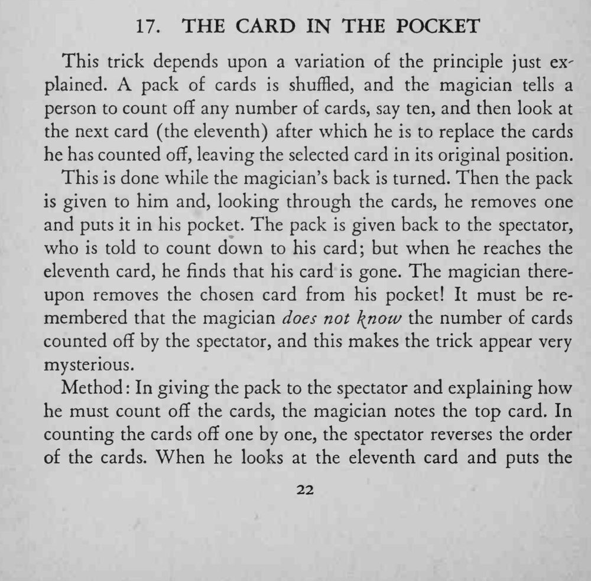
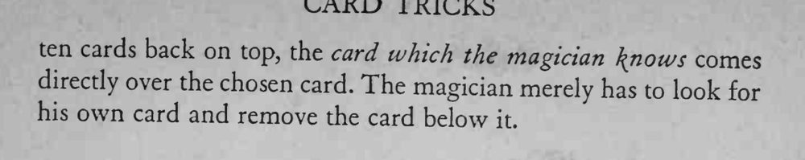

观众背对魔术师数出若干张、记住下一张，魔术师翻看牌堆后把一张牌收进自己口袋；观众再数到那个位置时，选牌已经不见了。
你不需要知道观众数了多少张，只要记住自己那张标记牌。


This trick depends upon a variation of the principle just explained. A pack of cards is shuffled, and the magician tells a person to count off any number of cards, say ten, and then look at the next card (the eleventh) after which he is to replace the cards he has counted off, leaving the selected card in its original position. This is done while the magician's back is turned. Then the pack is given to him and, looking through the cards, he removes one and puts it in his pocket. The pack is given back to the spectator, who is told to count down to his card; but when he reaches the eleventh card, he finds that his card is gone. The magician thereupon removes the chosen card from his pocket! It must be remembered that the magician does not know the number of cards counted off by the spectator, and this makes the trick appear very mysterious. Method In giving the pack to the spectator and explaining how he must count off the cards, the magician notes the top card. In counting the cards off one by one, the spectator reverses the order of the cards. When he looks at the eleventh card and puts the ten cards back on top, the card which the magician \nows comes directly over the chosen card. The magician merely has to look for his own card and remove the card below